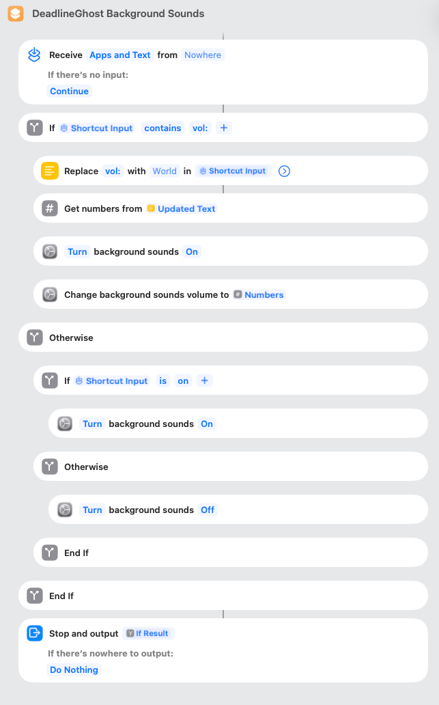

DeadlineGhost controls macOS Background Sounds through a small Apple Shortcut named DeadlineGhost Background Sounds. Routing through Shortcuts is what makes the app App Sandbox–safe and App Store distributable — sandboxed apps can't write to other apps' system preferences directly. You only set this up once.
Click the button below. macOS opens Shortcuts.app and asks you to add the shortcut to your library. Keep the name as DeadlineGhost Background Sounds — DeadlineGhost looks it up by name.
Open Shortcuts.app, create a new shortcut, name it exactly DeadlineGhost Background Sounds, and assemble these blocks in order. The screenshot below shows the finished layout.

vol:
vol: with empty in Shortcut Input → Updated TextNumberson
Every focus-session transition fires the shortcut once with one of these text inputs:
| Input | Effect |
|---|---|
| on | Turn background sounds ON (volume unchanged) |
| off | Turn background sounds OFF |
| vol:50 | Turn ON at 50% volume (any number 0–100) |
DeadlineGhost Background Sounds exactly — capitalisation included.vol:N invocation to avoid back-to-back shortcut races. If you customised the shortcut, keep the single-pass branching above.